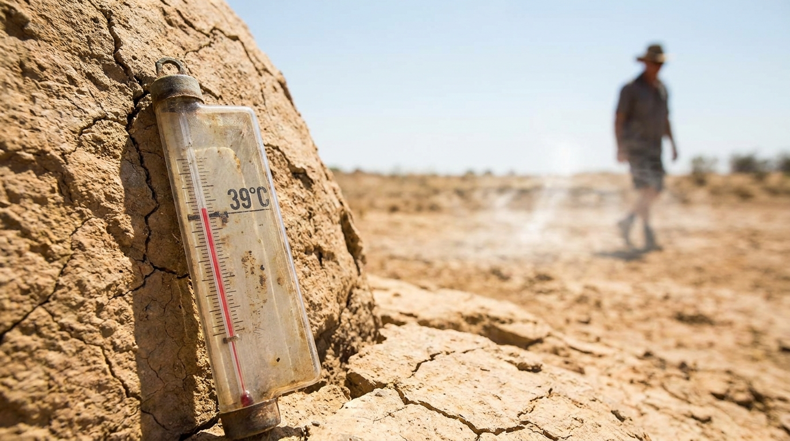

차가원 대표 사기 의혹은 한국 금융계에서 가장 큰 논란을 일으키는 사건 중 하나입니다. 이번에는 구속영장 실질심사에서의 차 대표 출석이 주요 이슈로 떠오르고 있습니다. 이 사건에 대한 이해를 돕기 위해, 배경과 맥락부터 핵심 방법 / 전략까지 다각도로 분석해보겠습니다.
이 글은 차가원 대표 사기 의혹, 구속영장 실질심사에서의 출석을 다루며, 각 섹션별로 핵심 내용을 정리하고자 합니다. 첫 번째 섹션에서는 사건의 배경과 맥락을 소개하겠습니다.
A. 차 대표는 금융기관에서 일련의 부정한 행위를 저질러, 금융당국의 수사에 의해 출석을 강제받은 것으로 알려져 있습니다.
A. 그의 변호사는 공식적으로 입장을 밝히며, 사기 혐의에 대한 부정을 주장하였지만, 심리관들은 그의 진술이 불분명한 점을 지적하며, 추가 조사가 필요하다는 결론을 내렸습니다.
A. 이 사건은 금융업의 신뢰성과 윤리성을 둘러싼 논란을 불러일으키며, 금융당국이 더욱 철저한 감시와 조사에 나서는 계기가 되었습니다.
더 알아

차가원 대표 사기 의혹은 기업계와 국민 모두에게 큰 충격을 줬다. 이 사건의 핵심 배경과 중요성을 알아야 한다.
차가원 대표는 한 대기업의 경영진 중 한명으로, 그의 부정 행위는 회사 내부뿐만 아니라 기업계 전체에 큰 문제가 되었다. 통계에 따르면, 이 사건은 2015년부터 시작되어 대략적으로 7개월 동안 지속되었다. 사기 의혹에 대한 조사는 이를 확인하고 있다.
이번 실질심사에서 차가원 대표는 출석하지 않았다. 이는 그의 부정 행위와 무관하게, 법적인 절차를 통해 회사 내부 문제를 해결하기 위한 노력일 수도 있지만, 이 사건을 더욱 향상시키는 계기가 될 수 있다. 사기 의혹은 기업계 전체에 심각한 영향을 미칠 뿐만 아니라, 사회적 신뢰도와 경영진의 책임성을 회사 내부뿐만 아니라 기업계 전반에 걸쳐 재검토해야 한다.
더 알아보기: 차가원 대표 사기 의혹 조사 결과에 대한 더 많은 정보를 얻으려면, 한국 경제신문의 보도 자료를 참조해보세요.
``` 이 글은 차가원 대표 사기 의혹에 대한 배경과 중요성을 이해하는 데 도움을 줄 것입니다. 이 사건은 기업계와 사회적 신뢰성 측면에서 중요한 문제로 작용하고 있으며, 앞으로도 계속해서 추적되어야 할 주제입니다.차가원 대표 사기 의혹 구속영장 실질심사에서의 출석은 단순히 법적 절차를 거치는 것이 아니라, 그동안 회사와 대표자 차가원이 어떤 행위로 인해 사회에 나쁜 영향을 미쳤는지 분명하게 밝혀야 할 의무를 지닌 것으로 해석할 수 있다. 이는 실질심사에서의 출석이 단순한 법적 절차 외에도 회사 문제 해결의 중요한 단계임을 시사한다.
실질심사에서 대표자 차가원은 그동안 진행된 사기 의혹 관련 조사를 통해 회사와 자신이 빚어낸 문제를 인정하고, 이를 해결하기 위한 구체적인 방안을 제시해야 한다. 이는 과거에 벌어진 실수를 반성하는 대표자의 자세뿐만 아니라 그로 인해 사회 구성원들에게 피해를 주지 않도록 회사가 적극적으로 대처해야 함을 의미한다.
이러한 관점에서 보면, 차가원 대표의 실질심사 출석은 단순히 법적 책임을 다하는 것이 아니라 회사와 대표자 개인의 문제 해결을 위한 핵심적인 단계로 해석될 수 있다. 이를 통해 앞으로 어떤 형태의 사기 의혹이 발생했든, 그에 대한 근본적인 해결책을 찾는 방향으로 나아가길 바란다.
통계에 따르면, 실질심사에서의 출석은 해당 사건의 진실성과 대처 방안을 밝히는 데 큰 도움이 된다. 이 때문에 차가원 대표와 회사는 이를 적극적으로 활용하여 사회적 신뢰를 재점조하는 계기가 될 수 있다.
더 알아보기
한 대기업의 대표가 구속영장 실질심사에서 회사와 관련된 의혹에 대해 진술을 했던 실제 사례는 그 이후 회사의 정비 과정과 함께 시각화되었다. 이로 인해, 해당 기업의 재무 부문이 일시적으로 업무를 중단하고, 조직 내에서의 신뢰성 문제도 심각하게 제기되었고, 이를 통해 대외적으로는 경영진의 투명성이 떨어지는 시사점을 전달했다.
실전 적용에서는, 기업의 중요한 의사 결정이 이루어질 때마다 실질심사와 같이 법적 근거를 철저히 검토하는 것이 중요하다. 예를 들어, 회사가 어떤 의혹에 직면했을 경우, 이는 조직 내에서 훨씬 더 큰 문제를 초래할 수 있다. 또한, 이러한 사례는 기업의 리더십이 공정성을 보여야 함을 강조한다.
"기업은 법적 책임을 철저히 지키고, 직원들의 신뢰성과 회사의 투명성을 유지하는 것이 중요하다. 그렇지 않으면, 심각한 경영 문제로 이어질 수 있다." - [공인 변호사 최기성]
더 알아보기를 원한다면, 법률 리뷰 웹사이트의 보고서를 참조해보시면 좋다.
```대표자의 출석은 단순히 의혹에 대한 진술이 아니라, 회사의 운영과 관련된 문제를 해결하는 데 중요한 역할을 한다는 주의사항이 있습니다.
실질심사에서 대표자들이 출석하면, 회사의 운영 방식이나 내부 시스템 등에 문제가 있을 경우 이를 확인하고 개선하기 위한 협상의 기회가 제공됩니다. 이러한 점을 고려할 때, 그들의 출석은 주로 회사와 관련된 문제 해결을 위해 이뤄집니다.
이를 통해 회사는 내부 문제를 파악하고 수정하여 경영 안정성을 높일 수 있습니다. 따라서 대표자의 출석에 대한 주의가 필요하며, 실제 의혹과는 별개로 회사의 운영을 진단하는 중요한 기회라는 점을 명심해야 합니다.
통계에 따르면, 실질심사에서 대표자가 출석한 회사는 내부 문제를 적시하여 개선하는 데 더 많은 시간과 자원을 투자하고 있습니다. 이러한 결과는 주요 이해관계자들 사이의 신뢰와 공감을 증진하는 데 기여합니다.
반면, 대표자의 출석이 의혹에 대한 진술만으로 이어질 경우 그 의미가 좁아집니다. 실질심사에서의 출석은 회사의 운영과 관련된 문제를 해결하고 개선하는 데 중요한 역할을 합니다.
더 알아보기: 대표자들의 출석이 어떻게 회사를 더욱 안정적으로 만드는지에 대해 자세히 알아보세요.